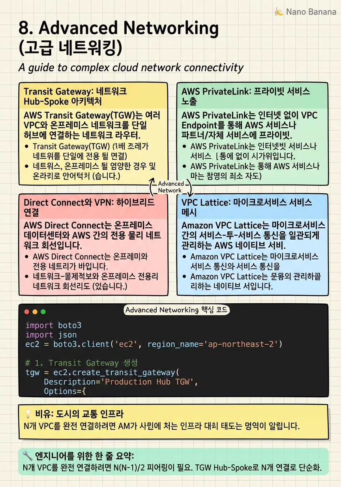

Advanced Networking

🎯 학습 목표
- Transit Gateway Hub-Spoke 아키텍처로 VPC 간 연결을 중앙화할 수 있다
- PrivateLink로 인터넷 없이 서비스를 안전하게 노출할 수 있다
- Direct Connect와 VPN의 트레이드오프를 설명하고 선택할 수 있다
- VPC Lattice로 마이크로서비스 간 통신을 관리할 수 있다
- 멀티 계정 네트워크 토폴로지를 설계할 수 있다
개인 AWS 계정에서 VPC 하나로 시작한 아키텍처는 조직이 성장할수록 복잡해집니다. 여러 팀이 독립적인 VPC를 사용하고, 개발·스테이징·프로덕션 환경이 분리되고, 온프레미스 데이터센터와 연결이 필요해지면, 네트워크 설계가 프로덕션 안정성의 핵심이 됩니다.
VPC를 직접 페어링(VPC Peering)하면 10개만 되어도 N×(N-1)/2 = 45개의 페어링이 필요합니다. AWS Transit Gateway는 이 스파게티 토폴로지를 Hub-Spoke 아키텍처로 단순화합니다. AWS PrivateLink는 인터넷 노출 없이 서비스를 다른 VPC나 계정에 제공합니다. AWS Direct Connect는 온프레미스와 AWS 간 전용 물리 회선을 제공합니다.
이 챕터에서는 엔터프라이즈 멀티 계정 환경에서의 네트워크 설계 패턴, 보안 경계 설정, 그리고 레이턴시·비용·보안을 균형있게 최적화하는 전략을 다룹니다.
핵심 내용
Transit Gateway: 네트워크 Hub-Spoke 아키텍처
AWS Transit Gateway(TGW)는 여러 VPC와 온프레미스 네트워크를 단일 허브에 연결하는 네트워크 라우터입니다.
TGW 이전에는 VPC Peering을 사용했습니다. VPC Peering은 두 VPC 간의 1:1 연결로, N개 VPC를 완전 연결하려면 N(N-1)/2개의 피어링이 필요합니다. TGW는 각 VPC가 TGW에만 연결하면 되므로 N개 연결로 모든 VPC 간 통신이 가능합니다.
TGW 라우팅 테이블은 트래픽 흐름을 제어합니다. 프로덕션 VPC와 개발 VPC를 같은 TGW에 연결하되 별도 라우팅 테이블로 격리합니다. 이로써 개발 환경이 실수로 프로덕션 DB에 접근하는 것을 방지합니다.
TGW Network Manager는 글로벌 TGW 토폴로지를 시각화합니다. 리전 간 TGW Peering으로 글로벌 네트워크를 구성합니다.
RAM(Resource Access Manager)으로 TGW를 Organization 내 다른 계정과 공유합니다. 공유 서비스 VPC(DNS, Active Directory, 모니터링)를 단일 계정에 두고 TGW를 통해 모든 계정에 서비스를 제공하는 것이 표준 패턴입니다.
AWS PrivateLink: 프라이빗 서비스 노출
AWS PrivateLink는 인터넷 없이 VPC Endpoint를 통해 AWS 서비스나 파트너/자체 서비스에 프라이빗으로 접근하는 기술입니다.
Interface Endpoint는 선택한 서비스(S3, DynamoDB, SSM 등)에 대한 ENI를 VPC에 생성합니다. 트래픽이 인터넷을 거치지 않아 보안이 강화되고, NAT Gateway 비용이 절감됩니다.
VPC Endpoint Service는 내 서비스를 다른 VPC나 계정에 PrivateLink로 노출합니다. NLB 뒤에 내 서비스를 위치시키고 Endpoint Service를 생성하면, 소비자는 Interface Endpoint를 생성하여 인터넷 없이 내 서비스에 접근합니다. SaaS 공급자들이 고객에게 프라이빗 접근을 제공하는 표준 방식입니다.
Gateway Endpoint는 S3와 DynamoDB 전용 Endpoint 타입으로 무료입니다. VPC 라우팅 테이블에 직접 추가됩니다.
PrivateLink vs VPC Peering: PrivateLink는 단방향 접근(소비자 → 서비스)이며 IP 주소 중복 없이 사용 가능합니다. VPC Peering은 양방향이며 VPC CIDR이 겹치면 사용 불가합니다.
Direct Connect와 VPN: 하이브리드 연결
AWS Direct Connect는 온프레미스 데이터센터와 AWS 간의 전용 물리 네트워크 회선입니다. 인터넷을 거치지 않아 일관된 레이턴시와 높은 대역폭을 제공합니다.
| 비교 | Direct Connect | Site-to-Site VPN |
|---|---|---|
| 연결 유형 | 전용 물리 회선 | 인터넷 기반 암호화 터널 |
| 레이턴시 | 일관적·낮음 | 가변적 |
| 대역폭 | 1Gbps~100Gbps | 최대 1.25Gbps |
| 구축 기간 | 수 주~수 개월 | 즉시 |
| 비용 | 높음 | 낮음 |
| 암호화 | 별도 설정 필요 (MACsec) | 기본 암호화 |
Direct Connect Gateway는 하나의 Direct Connect 연결로 여러 리전의 VPC에 접근합니다.
Active/Active 이중화: 가용성을 위해 두 개의 Direct Connect 회선을 서로 다른 Direct Connect Location에 구성합니다. VPN을 백업으로 추가하면 3-tier 이중화가 됩니다.
VPC Lattice: 마이크로서비스 서비스 메시
Amazon VPC Lattice는 마이크로서비스 간의 서비스-투-서비스 통신을 일관되게 관리하는 AWS 네이티브 서비스 메시입니다.
VPC Lattice의 핵심 개념은 서비스 디렉토리(Service Directory)입니다. EC2, ECS, EKS, Lambda로 구현된 어떤 서비스든 Lattice에 등록하면, 서비스 간 통신을 중앙에서 제어합니다.
인증 및 권한 부여: SigV4 기반 IAM 인증으로 서비스 간 인증을 표준화합니다. "서비스 A는 서비스 B의 /api/orders에만 GET 요청 가능"처럼 세밀한 접근 제어가 가능합니다.
가중치 기반 라우팅: 동일 서비스의 여러 버전에 트래픽을 분산합니다. 카나리 배포를 인프라 변경 없이 Lattice 라우팅 설정만으로 구현합니다.
VPC Lattice vs Istio/App Mesh: VPC Lattice는 AWS 네이티브이고 운영이 간단합니다. Istio는 더 강력하지만 운영 복잡도가 높습니다. 팀이 Kubernetes 전문성이 없다면 Lattice가 현실적인 선택입니다.
AWS Network Firewall과 보안 VPC 설계
AWS Network Firewall은 VPC 트래픽을 레이어 3-7에서 검사하는 완전 관리형 방화벽입니다. Stateful 규칙 엔진, Suricata 호환 IPS(침입 방지 시스템) 규칙, 도메인 기반 필터링을 지원합니다.
중앙화된 방화벽 VPC 패턴: 보안 VPC(Inspection VPC)를 생성하고, 모든 인터넷 트래픽을 이 VPC를 통해 라우팅합니다. 인터넷 게이트웨이 → Network Firewall → TGW → 각 워크로드 VPC 순으로 트래픽이 흐릅니다.
방화벽 정책 계층화:
- 레이어 3/4: IP/포트 기반 ACL
- 레이어 7: HTTP/TLS SNI 기반 도메인 필터링
- Stateful IPS: 알려진 악성 패턴 탐지
DNS Firewall은 Route 53 Resolver DNS 응답을 필터링하여 알려진 악성 도메인 접근을 차단합니다. EC2 인스턴스가 C&C(Command & Control) 서버에 연결하려는 시도를 DNS 수준에서 차단합니다.
💡 비유로 이해하기
고급 네트워킹을 도시 교통 시스템에 비유해봅시다. VPC는 각 도시(서울, 부산, 대전)입니다. VPC Peering은 두 도시 간의 직통 고속도로입니다. 도시가 10개가 되면 직통 고속도로가 45개 필요하고 유지 관리가 불가능합니다.
Transit Gateway는 KTX 환승역입니다. 서울·부산·대전이 모두 KTX 허브(TGW)에 연결하면 3개의 노선만으로 모든 도시 간 이동이 가능합니다. PrivateLink는 전용 지하 통로입니다. 공공 도로(인터넷)를 거치지 않고 특정 빌딩(서비스)에 직접 접근하는 VIP 통로입니다.
Direct Connect는 KTX 전용 선로입니다. 일반 도로(인터넷 VPN)보다 빠르고 안정적이지만 건설에 시간과 비용이 필요합니다. VPN은 일반 고속도로에 정해진 경로로 달리는 암호화된 차량입니다. 교통 상황에 따라 속도가 달라집니다.
💻 코드 예시
boto3로 Transit Gateway를 생성하고 여러 VPC를 연결하며, VPC Endpoint를 생성하는 예제입니다.
import boto3
import json
ec2 = boto3.client('ec2', region_name='ap-northeast-2')
# 1. Transit Gateway 생성
tgw = ec2.create_transit_gateway(
Description='Production Hub TGW',
Options={
'DefaultRouteTableAssociation': 'disable', # 라우팅 테이블 자동 연결 비활성화
'DefaultRouteTablePropagation': 'disable', # 라우트 자동 전파 비활성화
'AutoAcceptSharedAttachments': 'disable', # 수동 승인
'DnsSupport': 'enable',
'VpnEcmpSupport': 'enable'
},
TagSpecifications=[{
'ResourceType': 'transit-gateway',
'Tags': [{'Key': 'Name', 'Value': 'prod-tgw'}]
}]
)
tgw_id = tgw['TransitGateway']['TransitGatewayId']
print(f'TGW created: {tgw_id}')
# 2. VPC를 TGW에 연결 (Attachment)
def attach_vpc_to_tgw(vpc_id: str, subnet_ids: list, name: str) -> str:
attachment = ec2.create_transit_gateway_vpc_attachment(
TransitGatewayId=tgw_id,
VpcId=vpc_id,
SubnetIds=subnet_ids,
Options={'DnsSupport': 'enable', 'ApplianceModeSupport': 'disable'},
TagSpecifications=[{'ResourceType': 'transit-gateway-attachment',
'Tags': [{'Key': 'Name', 'Value': name}]}]
)
return attachment['TransitGatewayVpcAttachment']['TransitGatewayAttachmentId']
# 프로덕션 VPC와 공유 서비스 VPC 연결
prod_attachment = attach_vpc_to_tgw(
vpc_id='vpc-prod-xxxx',
subnet_ids=['subnet-a', 'subnet-b'],
name='prod-vpc-attachment'
)
shared_attachment = attach_vpc_to_tgw(
vpc_id='vpc-shared-xxxx',
subnet_ids=['subnet-c', 'subnet-d'],
name='shared-services-attachment'
)
# 3. S3 VPC Endpoint 생성 (Gateway 타입 — 무료)
vpc_endpoint_s3 = ec2.create_vpc_endpoint(
VpcId='vpc-prod-xxxx',
ServiceName='com.amazonaws.ap-northeast-2.s3',
VpcEndpointType='Gateway',
RouteTableIds=['rtb-private-a', 'rtb-private-b'], # 프라이빗 서브넷 라우팅 테이블
PolicyDocument=json.dumps({
'Statement': [{
'Effect': 'Allow',
'Principal': '*',
'Action': 's3:GetObject',
'Resource': 'arn:aws:s3:::my-prod-bucket/*'
}]
})
)
print(f'S3 Endpoint: {vpc_endpoint_s3["VpcEndpoint"]["VpcEndpointId"]}')
# 4. SSM Interface Endpoint 생성 (EC2가 인터넷 없이 SSM 사용)
for service in ['ssm', 'ssmmessages', 'ec2messages']:
ec2.create_vpc_endpoint(
VpcId='vpc-prod-xxxx',
ServiceName=f'com.amazonaws.ap-northeast-2.{service}',
VpcEndpointType='Interface',
SubnetIds=['subnet-a'],
SecurityGroupIds=['sg-endpoint-xxxx'],
PrivateDnsEnabled=True # DNS 이름 자동 오버라이드
)
print(f'{service} Interface Endpoint created')TGW 생성 시 DefaultRouteTableAssociation: disable로 자동 라우팅을 끄고, 명시적 라우팅 테이블로 VPC 간 통신을 세밀하게 제어합니다. S3 Gateway Endpoint는 무료이며 프라이빗 서브넷에서 NAT Gateway를 거치지 않고 S3에 접근합니다. SSM Interface Endpoint 3개(ssm, ssmmessages, ec2messages)를 모두 생성해야 EC2 인스턴스가 인터넷 없이 Session Manager를 사용할 수 있습니다. PrivateDnsEnabled: True는 EC2가 기존 SSM 도메인으로 자동으로 Endpoint에 라우팅됩니다.
🏭 현업에서의 평가
✅ 시니어가 보는 것
- TGW 라우팅 테이블로 환경 간 격리 설계
- PrivateLink vs VPC Peering 선택 근거 (IP 중복, 트래픽 방향)
- Direct Connect 이중화 설계 (Active/Active, Active/Standby)
- 인터넷 없는 VPC에서 EC2 관리 방법 (SSM Endpoint)
- NAT Gateway 비용 최적화 (S3/DynamoDB Gateway Endpoint 활용)
⚠️ 레드 플래그
- 모든 VPC를 완전 메시로 연결 — N*N 규모 문제 이해 없음
- 프로덕션 VPC와 개발 VPC를 같은 TGW 라우팅 테이블로 연결 — 격리 미흡
- Direct Connect를 단일 구성 — 장애 시 연결 단절
- 퍼블릭 서브넷에 RDS 배포 — 보안 위험
🎤 예상 인터뷰 질문
- 20개의 VPC가 있는 환경에서 공유 서비스(DNS, AD)에 접근하는 네트워크 아키텍처를 설계해주세요.
- 온프레미스에서 AWS로 10Gbps 이상의 데이터를 안정적으로 전송해야 합니다. 어떤 연결 방식을 선택하겠습니까?
- VPC의 EC2 인스턴스가 인터넷에 접근하지 않고 S3에 데이터를 저장하려면 어떻게 해야 하나요?
✨ 핵심 요약
TGW = 네트워크 스파게티의 해법
N개 VPC를 완전 연결하려면 N(N-1)/2 피어링이 필요. TGW Hub-Spoke로 N개 연결로 단순화.
TGW 라우팅 테이블로 환경 격리
프로덕션·개발·공유 서비스를 별도 라우팅 테이블로 분리. 격리 없는 TGW는 보안 경계가 없는 것.
PrivateLink = IP 중복 없는 단방향 서비스 노출
VPC Peering의 대안. CIDR 충돌 없이 서비스를 다른 계정에 노출. SaaS 제공 표준 방식.
S3/DynamoDB Gateway Endpoint는 무료
NAT Gateway를 통하는 S3 트래픽은 과금됨. Gateway Endpoint로 비용 즉시 절감.
Direct Connect는 예측 가능한 레이턴시가 필요할 때
VPN보다 구축 시간·비용이 높지만 전용 회선으로 일관된 성능 보장.
SSM Endpoint = 배스천 호스트 대체
인터넷 없는 EC2에 SSH 대신 SSM Session Manager 사용. 포트 22 불필요, 감사 로그 자동 기록.
VPC Lattice로 마이크로서비스 통신 표준화
서비스 메시 운영 없이 서비스 간 인증·권한·라우팅을 AWS 네이티브로 관리.
중앙 Inspection VPC 패턴으로 보안 일원화
모든 인터넷 트래픽을 Network Firewall을 통해 검사. 계정별 방화벽 설정 불일치 방지.